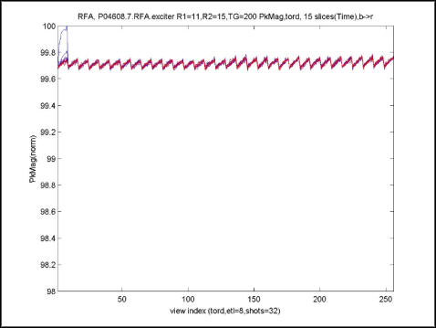
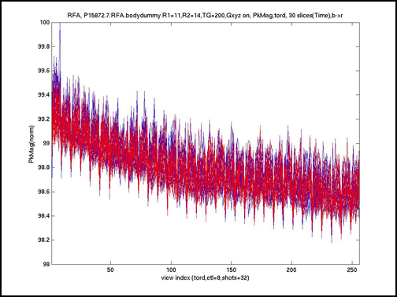

Illustration 16: PkMag (Head Dummy)

This plot’s title indicates it’s an RFA tool result (from raw data file /usr/g/mrraw/P04608.7.RFA.exciter) from an exciter loopback test performed with R1=11, R2=12,TG=200, showing RF pulse PkMag results ordered in time.
The “PkMag” means that for each RF pulse we are plotting a point representative of its peak time domain magnitude measured during its play out. This RFA acquisition collected 15 slices worth of RF2 pulses. That is, 15 echo trains per TR period, each train 8 echoes in length, for 32 TR periods or shots (i.e. “ymatrixSize/teal” = 256/8 = 32 shots) for a total of 15x8x32=3840 RF pulses (total plot points).
All data from the 1st echo train slot in each TR period is shown in a “pure” blue plot with all 256 points acquired for that slot (one per RF pulse) shown in time order from left to right (i.e. indices 1 to 256=ymatrixSize on the horizontal axis). All data from the 2nd through 14th echo train slots in each TR period is shown in separate overlaid plots that gradually change in color from blue to purple to red. All data from the last (i.e. 15th) echo train slot in each TR period is shown in a “pure” red plot overlaid on all previous plots.
The ideal “no problems” result would appear as a single red horizontal line at a vertical axis value of 100, meaning that every RF2 pulse played for every slice had EXACTLY the same Peak Magnitude and all these values scaled to 100.0 when the entire data set was normalized to “percent of peak value”. This display format allows visual assessment/separation of instabilities that are tied to echo train, to “shot” (TR period), to “slice time slot” or to the entire scan’s acquisition. Be aware that the plots are auto-scaled.
Illustration 14: PkMag, or Peak Magnitude (Exciter)

Illustration 15: PkMag (Body Dummy)

Illustration 16: PkMag (Head Dummy)